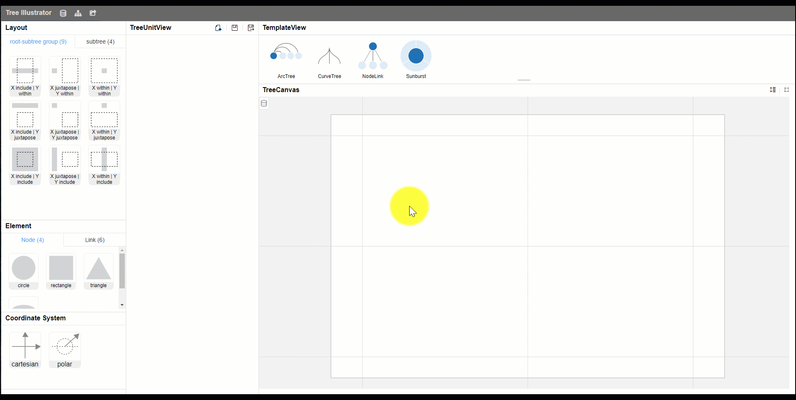

Notice
This page introduces how to use Tree Illustrator. Make sure you have read the basic grammar.
User Interface Components
Tree Illustrator consists of 6 following components:
-
Tool Bar
-
Components Panel
-
TreeUnit View
-
Params Panel
-
Template Panel
-
Tree Canvas
Loading Data
When you launch Tree Illustrator, it automatically loads a default hierarchical data. You can skip
it.
If you need change data, Make sure the data is in JSON format. Click on the
data button in the toolbar to upload data.
Creating a Tree
Clicking on any GoTree template, all nodes will be assigned it by default. The tree visualization will be automatically created in the Tree Canvas When each node is assigned a GoTree template.
Editing Template Params
After clicking on any GoTree template, the TreeUnit View will shows the visualization in a simple data and the Params Panel will shows all the parameters that can be edited.
Besides the Params Panel, you can modify the params directly by hovering over where you would like to modify in the TreeUnit View.
Editing Template Components
Click on any component on the Components Panel, the template will be replace with the selected Component.
Creating New Template
Except modifying the current template, click on the "New" button to create a new blank template. Components can be added to the blank template and their parameters can be modified.
Save / Delete Template
Click on the "Save" button to save the template as a new one whenever you are satisfied.
Click on the "Delete" button to delete the template from the Template Panel.
Hybrid Template
Select the node that you want to change the template in Tree Canvas, then click the template that needs to be assigned to the select node(s), and Tree Canvas will generate a hybrid result.
Supports the quick operation of selecting multiple nodes -- apply to all nodes at the same level as the select nodes; or to all children nodes of the selected nodes, etc.
Exporting
Click on the "Export" buttton to export the reslut. Supports png, svg, json.